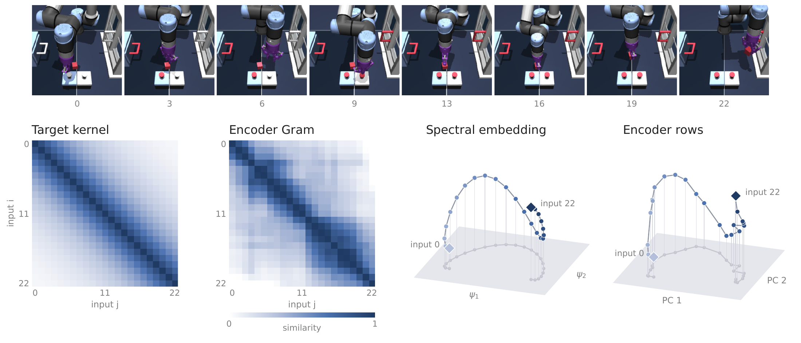
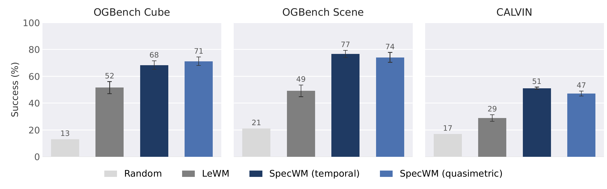
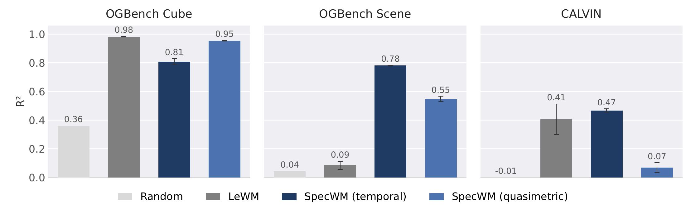
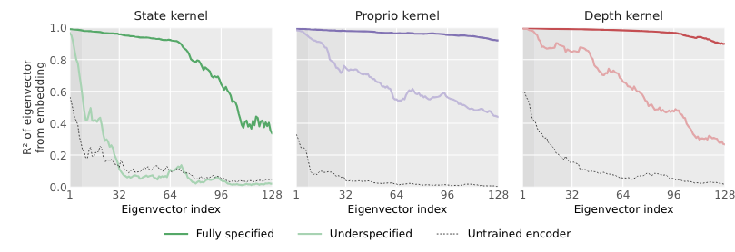
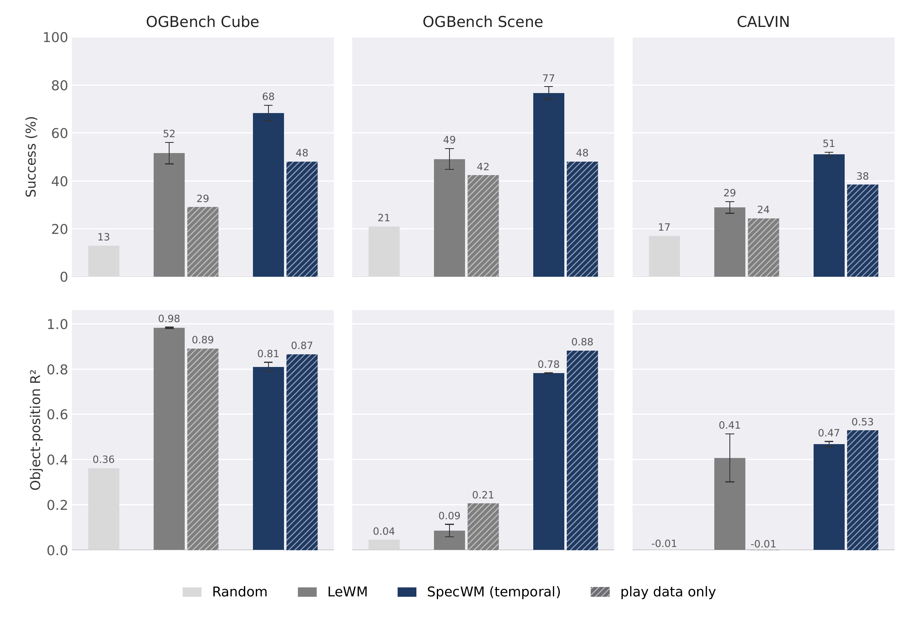
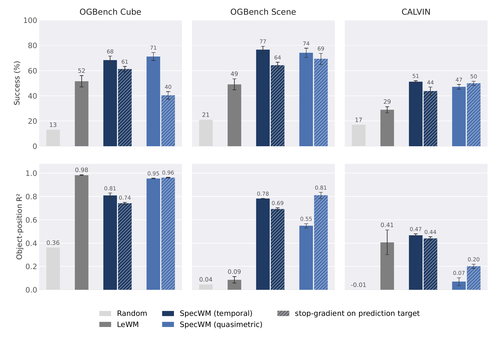
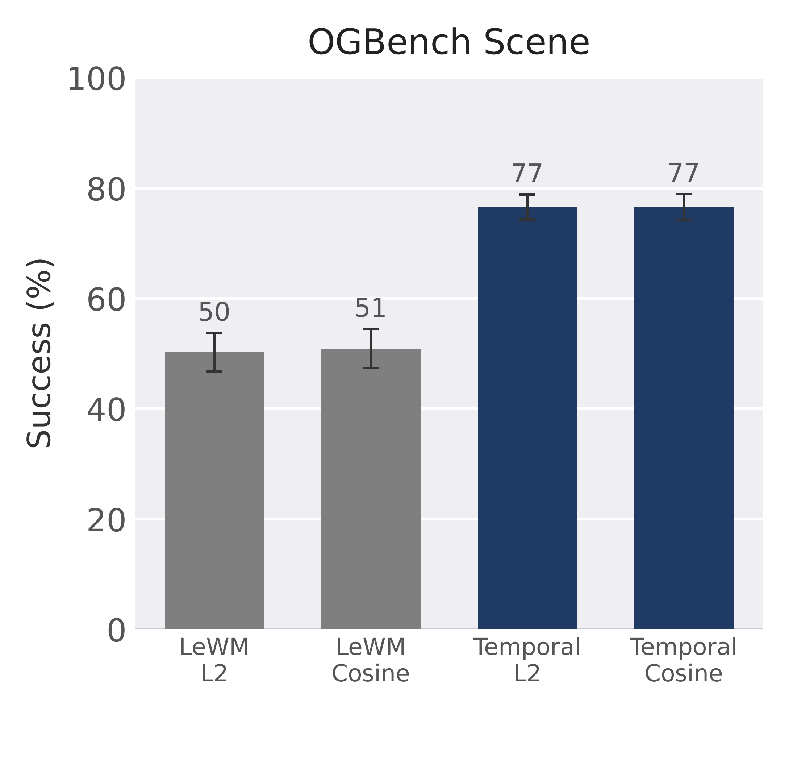
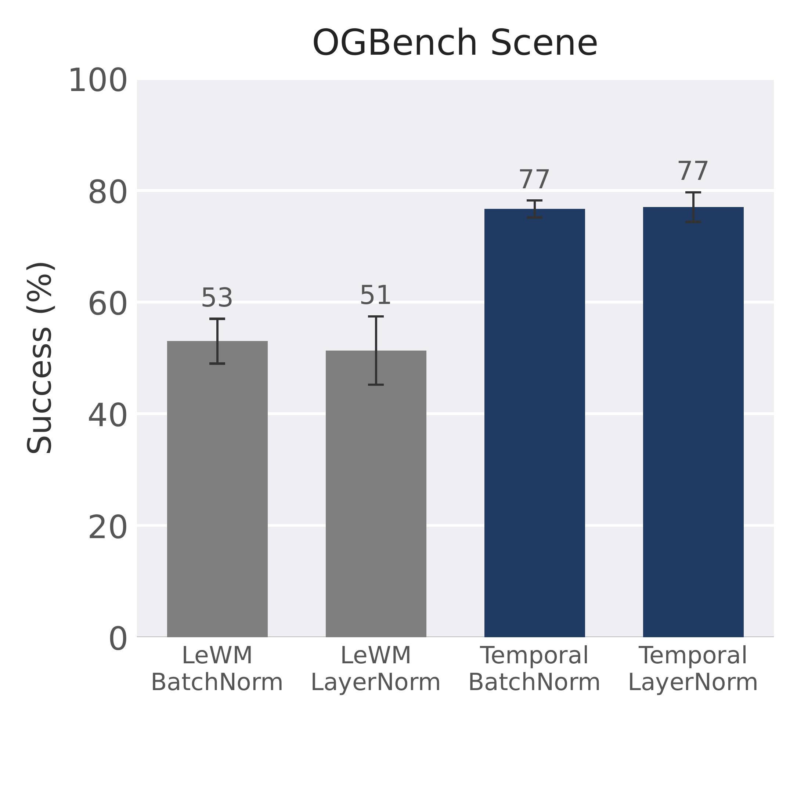

What should a world model preserve?
The goal of a world model is to encode sufficient information to predict the consequences of an agent’s actions. At the same time, complex real-world observations contain large amounts of task-irrelevant information. Learning a compact representation therefore hinges on deciding which aspects of an observation to retain.
Joint Embedding Predictive Architectures (JEPAs) predict outcomes in a latent space, rather than reconstructing high-dimensional observations in pixel space, allowing learned representations to abstract away details of the input. The training objective must guide which distinctions the model preserves without requiring it to reproduce every detail of an observation.
Recent work has made substantial progress toward stable JEPA training through regularizing the embedding distribution. However, avoiding collapse alone does not ensure that a representation preserves information needed for control. For instance, an encoder may distinguish robot configurations while ignoring the objects the robot must manipulate. We seek a direct method to express these relationships and understand their consequences.
We approach this problem through the lens of spectral representation learning, which historically focuses on extracting representations from pairwise relationships between samples. Several contrastive and non-contrastive objectives admit spectral interpretations. Building on this perspective, we make the pairwise notion of similarity between two observations the center of a new training objective for latent dynamics modeling.
We introduce a spectral alignment framework for training world models to preserve a chosen similarity structure. Using a notion of distances between observations, we define a target similarity kernel. We then train an encoder to learn embeddings whose pairwise similarities match the target and an action-conditioned predictor to output future latents. We name the resulting world model SpecWM.
When some information about the underlying system is known, encoders can be trained based on physical distances, but the natural ordering of states within a trajectory is also sufficient to provide a training signal. Empirically, the choice of kernel strongly controls which physical quantities are recoverable from the representation. Temporal spectral alignment improves planning across OGBench Cube, OGBench Scene, and CALVIN.
Spectral alignment

Building a target
We start from a distance d between pairs of observations, derived from ground-truth measurements or simply by counting the observations that separate them in the data. For n observations, we adopt a Laplacian kernel to convert distances into similarities:
Observations that are close according to d remain distinguishable, while pairs more than a few \sigma apart have similarity near zero. The bandwidth \sigma therefore sets the range of distances the target resolves; we set it to the median target distance over the pairs the kernel is defined on.
Given a target kernel specifying the desired inner product between every pair of inputs, we can construct a coordinate vector for each input that realizes these pairwise relationships. Such a construction is called a spectral embedding. For a symmetric, positive semidefinite kernel K=U\Lambda U^\top, a spectral embedding is
Each row provides the coordinates of one sample. Each eigenvalue determines the relative contribution of its corresponding eigenvector to the kernel, making eigenvalue rescaling a natural reweighting operation.
Without centering, the kernel would be dominated by a positive baseline, and regressing this target would favor matching that shared baseline rather than the variation around it. Still, if a few eigenvalues dominate, the encoder can achieve a small squared error by matching those directions while largely ignoring the others. We therefore temper the kernel by reshaping its spectrum before it is used as a target.
With \widetilde K=U\Lambda U^\top, the tempered target is K^\alpha=nU\Lambda^\alpha U^\top/\operatorname{tr}(\Lambda^\alpha). The encoder f_\theta maps each observation x_i to an embedding h_i\in\mathbb R^d. We rescale these outputs and compute their Gram matrix:
We double center S and regress the target through a spectral loss:
In the fully specified setting, an embedding table that minimizes this loss recovers the row-normalized spectral embeddings of K^\alpha, up to an orthogonal transformation. Theorem 1 gives the conditions. We can thus evaluate the probing qualities of spectral embeddings derived from arbitrary kernels without ever having to train a model.
Prediction and planning
While the spectral loss is sufficient for training an encoder, planning in latent space requires learning a predictor. We train it by a simple regression objective in latent space, which is also backpropagated through the encoder:
The predictor g_\phi takes the current embedding and an action, and predicts the embedding of the next observation. For stability, we apply a parameter-free RMS normalization to the encoder output, so that every embedding has norm \sqrt d. This fixes the scale of the embeddings seen by the predictor and the planner.
We use the Cross-Entropy Method (CEM) to optimize action sequences. Candidate sequences are sampled from a Gaussian distribution, and the world model predicts the representation of observations T steps ahead for each. Candidates are then scored according to similarity to the embedding of a goal observation. The action distribution is refit on the best candidates. We then execute a prefix of the selected sequence before replanning from the new observation.
Learning from temporal distance
When metadata is not available, the ordering of observations in trajectories itself can form an unsupervised kernel. We use a temporal kernel, which relies on the absolute difference between indices for observations ordered in a trajectory: d(x_i,x_j)=|i-j|. Its only source of supervision is the order of observations in a trajectory.
Temporal kernel bandwidth
InteractiveAt 7 frames apart, similarity is 0.37. A wider band preserves similarity across longer separations.
The bandwidth σ sets the range of distances the target resolves. The plot shows the raw kernel, before centering.
While supervised kernels can describe relationships between all pairs of inputs, the unsupervised kernels we use only express relationships for pairs of inputs in the same trajectory. In this underspecified setting, cross-trajectory similarities are excluded from the training objective. We omit tempering and target-diagonal rescaling; each clip’s squared error is normalized by the mean squared magnitude of its centered target before averaging across clips.
Long-range pairs on CALVIN
In CALVIN, blocks move only when manipulated, so their positions often remain constant within a short clip. Within-clip temporal supervision therefore provides little signal to distinguish block positions. We augment each clip with eight observations from the same episode to capture changes over longer periods. These observations contribute only to the spectral loss, using their original time indices, and require no associated actions.
A learned distance
We also evaluate a quasimetric kernel, which estimates temporal distances between observations according to the optimal goal-reaching policy. While this potentially introduces estimation errors, it labels state pairs by the minimum number of steps between states, instead of expressing the temporal separations observed in the data, and can thus compensate for poor data quality. We symmetrize this distance to match the symmetric Gram matrix of the embeddings.
Planning with SpecWM
Our empirical evaluation revolves around three visual manipulation environments: OGBench Cube and OGBench Scene, and CALVIN. OGBench Scene and CALVIN introduce multiple objects and articulated fixtures whose states must be represented for control. These environments directly test whether the learned representation preserves information about the surrounding scene as well as the robot itself.
With temporal and quasimetric kernels, SpecWM improves upon LeWM by an average of 21 percentage points in planning success rate. The planner ranks predicted outcomes by their embedding similarity to the goal, which spectral alignment shapes to reflect temporal or quasimetric proximity.

| Environment | LeWM | SpecWM Temporal |
SpecWM Quasimetric |
|---|---|---|---|
| OGBench Cube | 52 | 68 | 71 |
| OGBench Scene | 49 | 77 | 74 |
| CALVIN | 29 | 51 | 47 |
Overall, a learned quasimetric kernel is generally on par with a readily available temporal kernel, but either may be preferable depending on the environment.
What do the representations preserve?
To isolate representation quality from prediction accuracy, we evaluate linear probing performance for the position of objects across environments. We consider held-out observations that the encoder was never trained on. For each of five train-evaluation splits, we fit a ridge regressor for each state variable, choose regularization by cross-validation, and report R^2 on the evaluation set, averaged over variables and splits.

SpecWM does not always beat LeWM on probing, and probe quality does not directly correlate with planning performance. On Cube, LeWM recovers object position more accurately but plans less successfully. On OGBench Scene, SpecWM does better at both.
Kernel choice
We extend the investigation to supervised kernels: state, depth, and proprioception. For each, we use the Euclidean distance between the corresponding feature vectors as the target distance. The state kernel uses the simulator state underlying each observation. Although this information is generally unavailable in real-world settings, it lets us evaluate a target with access to the full physical state.
The fully specified state kernel achieves the highest average R^2 (0.93). Under underspecified supervision, the temporal kernel nearly matches the state kernel (0.84 versus 0.85). Proprioceptive kernels preserve the robot’s configuration but largely omit object states.
| OGBench Scene probe R² | Temporal1 | State2 | Proprio2 | Depth2 |
|---|---|---|---|---|
| OGBench Scene average | 0.84 | 0.93 | 0.16 | 0.50 |
| Cube | 0.79 | 0.96 | 0.08 | 0.09 |
| Arm | 0.67 | 0.73 | 0.67 | 0.59 |
| Drawer | 0.91 | 0.99 | 0.01 | 0.87 |
| Window | 0.87 | 0.99 | 0.00 | 0.91 |
| Buttons | 0.96 | 0.99 | 0.02 | 0.04 |
Selected columns from the paper’s Table 1: linear probe R^2 on held-out OGBench Scene episodes. 1Relationships within trajectories only. 2Relationships specified across states.


The spectral-recovery result below characterizes optimal embeddings through the teacher kernel’s eigenvectors, up to row scaling and an orthogonal transformation. Here, we test that connection by fitting linear probes to recover each eigenvector from the learned representations. Recovery is strongest for the leading eigenvectors and decreases for directions associated with smaller eigenvalues.
The state kernel’s lower recovery scores at later indices largely reflect its less even spectrum: most of its energy is concentrated in the leading directions. Weighting each eigenvector’s probe R^2 by its normalized eigenvalue gives mean scores of 0.965 for state, 0.987 for proprioception, and 0.992 for depth. The models therefore recover the directions carrying most of the kernel’s energy particularly well.
Additional ablations
Failure data
Predictors tend to generalize poorly to random actions when trained on expert-only data. We train LeWM and temporal SpecWM on the play data alone, at matched updates, frames per update, and schedule. Failure data raises planning success for both models in every environment, but does not explain the difference between them.

Prediction gradients
We evaluate a variant of SpecWM which does not backpropagate the predictor regression objective through the target. The prediction loss still updates the encoder through the current observation, but no longer through the next observation used as its target. Planning success generally decreases, while probing results do not follow an obvious trend.

Planning cost and normalization
The two world models have different inherent distance metrics in their latent distributions. We use the one that fits each latent most naturally: L2 for LeWM and cosine similarity for SpecWM. The choice of measure is not the cause of the planning gains. The choice of normalization layer also does not have a substantial impact on planning performance.


Conclusion
The core idea is to directly specify the pairwise relationships that representations should preserve through a target kernel. We find that readily available kernels result in strong planning performance, which is not entirely correlated with probing accuracy.
Pursuing a better understanding of the mechanisms enabling effective planning would be valuable. We view the study of which kernels are most conducive to large-scale self-supervised training as the next primary direction of work. Kernels involving language for semantic distances are another future direction.
Theoretical analysis
The teacher kernel specifies which relationships the encoder should preserve. We now ask what matching those relationships implies: which representations minimize the loss, which quantities a linear probe can recover, when irrelevant information disappears, and why temporal similarity can help planning. The results below describe idealized optima under explicit assumptions; full proofs appear in the paper’s proofs appendix.
The spectral loss has a known optimum
In the fully specified setting, the teacher defines relationships between every pair of inputs. Its centered, tempered target K^\alpha can be decomposed into eigenvectors and eigenvalues. A spectral embedding uses the retained eigenvectors as coordinates, scaled by the square roots of the target’s eigenvalues. When the embedding dimension is large enough, these coordinates reproduce the target’s pairwise inner products exactly.
Spectral recovery
Suppose m\le d and K^\alpha_{ii}>0 for every input i. Then the minimum spectral loss is zero, attained exactly at
Here m is the number of retained positive spectral directions, d is the encoder dimension, H_{\mathrm{spec}} is the spectral embedding of K^\alpha with square-root eigenvalue scaling, padded to d dimensions, and Q\in\mathbb R^{d\times d} is orthogonal.
The optimum recovers the target’s geometry up to a rotation or reflection and positive scaling of each row. Row scaling remains free because the loss rescales each embedding to the length prescribed by the target diagonal. With fixed-norm encoder outputs, this becomes a row-normalized spectral embedding, up to an orthogonal transformation.
This gives a way to inspect a kernel before training a neural encoder: compute its spectral embedding and evaluate what its coordinates make accessible. The theorem characterizes the optimum of an embedding table; it does not guarantee that neural-network training reaches that optimum.
Downstream probing guarantees
A linear probe can recover a quantity exactly when its values lie in the representation’s column space. The spectral characterization therefore connects kernel choice to the information accessible downstream. In particular, a kernel built from label relationships can make the labels themselves linearly recoverable, even though the encoder never directly regresses onto those labels.
Linear recoverability
Let Y\in\mathbb R^{n\times p} be centered, with \mathbf1^\top Y=0, unit row norms \|y_i\|=1, and \operatorname{rank}(Y)\le d. Set K=YY^\top, use \alpha=1, and retain all positive spectral directions. Every global minimizer H^\star of the spectral loss subject to \|h_i\|=\sqrt d satisfies
Under these conditions, matching the labels’ pairwise inner products preserves enough information to reconstruct them with a linear map. This motivates teachers built from physical quantities. The exact guarantee applies to the stated label kernel and normalization; it does not imply perfect recovery for every distance-based kernel used in the experiments.
Task-irrelevant information
Selective invariance means retaining relevant distinctions while dropping details the teacher ignores. Write each observation as x_i=(s_i,n_i), where s_i is task-relevant state and n_i is nuisance information. For example, a manipulation teacher may depend on object positions while ignoring moving foliage in the background. We ask whether matching that teacher also makes the encoder ignore the foliage.
Let \nu(\cdot\mid s_i) be the distribution of nuisance values at state s_i, and let Z collect the task-relevant trajectory and teacher metadata. We need a coverage assumption: nuisance values that are individually possible at two states must also be possible together in a trajectory visiting those states.
Coverage includes independent sensor noise and correlated disturbances when all otherwise possible combinations remain possible. It excludes a background identity or lighting condition that varies across trajectories but stays fixed within each one. Such a shared attribute could select a rotation for every embedding in a clip without changing their pairwise similarities.
Abstraction of task-irrelevant information
Assume coverage, fixed-norm encoder outputs, and target-diagonal rescaling. If each trajectory’s centered, tempered target K^\alpha has strictly positive diagonal entries almost surely and \mathbb E[\mathcal L_{\mathrm{spec}}]=0, then
for almost every clip, every frame i, and almost every pair (n,n') drawn independently from \nu(\cdot\mid s_i).
At zero expected loss, changing the nuisance component while holding the relevant state fixed leaves the representation unchanged. Coverage lets us vary nuisance draws while preserving the teacher’s inner products; centering forces the rescaled embeddings to sum to zero, preventing one such draw from changing its embedding independently. This result assumes target-diagonal rescaling, which is omitted in our practical underspecified training variant.
Temporal kernels and the successor measure
Temporal supervision uses only how far apart observations occur in a trajectory. To understand its connection to planning, we move from a free embedding table to a state-conditioned encoder h:\mathcal S\to\{z\in\mathbb R^d:\|z\|=1\}. The behavioral successor measure counts discounted future visits under the data-collection policy:
Assume a finite state space and a stationary Markov policy \pi_\beta whose induced chain P is irreducible and aperiodic. Its stationary distribution is \mu, and trajectories start with x_0\sim\mu. Sample both indices uniformly from a length-T trajectory. For this analysis, omit student and teacher centering, teacher tempering, and spectral truncation.
Writing s(x,x')=h(x)^\top h(x'), the population loss is
The same state pair can occur at different temporal separations. Define its expected teacher similarity as
A conditional bias–variance decomposition separates the loss into regression onto R_T and a term independent of the encoder. Minimizing the population loss is therefore equivalent to minimizing the expected squared error between embedding similarity and R_T. The next result identifies this target for long trajectories.
Population target
Under the assumptions above, for every pair x,x'\in\mathcal S,
If the chain is reversible, with \mu(x)P(x'\mid x)=\mu(x')P(x\mid x'), this simplifies to
The temporal target thus contains a symmetrized successor measure, normalized by stationary state frequencies. It reflects discounted visitation in both temporal directions, relative to how common each state is in the data. This connects the similarity score used in planning to how readily states lead to one another under the behavior policy, within the idealized setting above.
Comparing kernels for linear probing
The paper’s additional kernel-dominance result asks when one kernel is at least as useful as another for every linear probe target. At a zero-loss optimum with fixed row norms, the encoder’s column space is determined by the target’s cosine Gram matrix. Dominance therefore amounts to inclusion of the spaces of linearly recoverable targets.
Kernel dominance
Take two centered, tempered targets of rank at most d with positive diagonals, and global minimizers with row norm \sqrt d. Define their cosine Gram matrices by K^{\mathrm{cos}}_{ik}=K^\alpha_{ik}/\sqrt{K^\alpha_{ii}K^\alpha_{kk}}. The first kernel gives no greater optimal linear-probe error for every target Y if and only if
Dominance is strict if and only if this inclusion is strict.